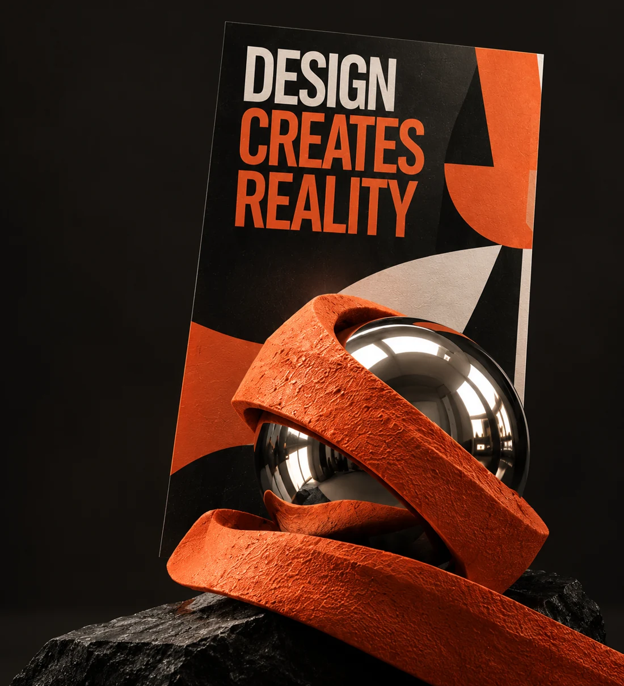
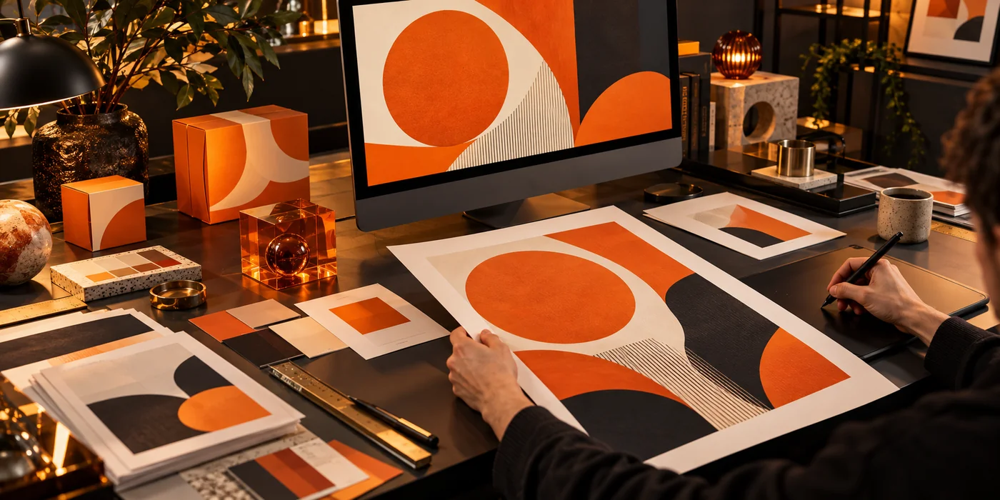
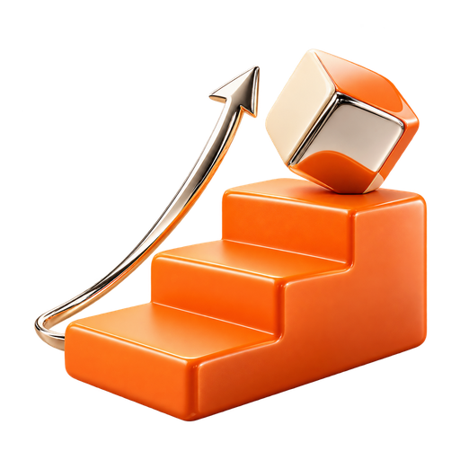
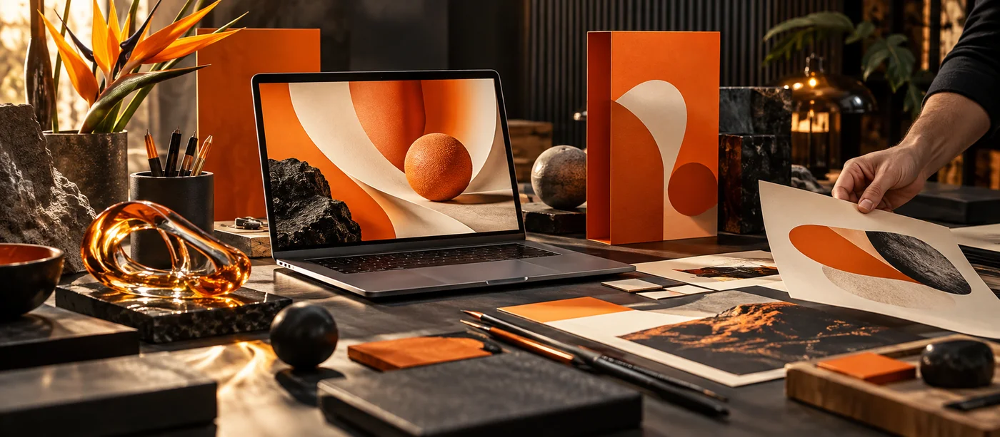
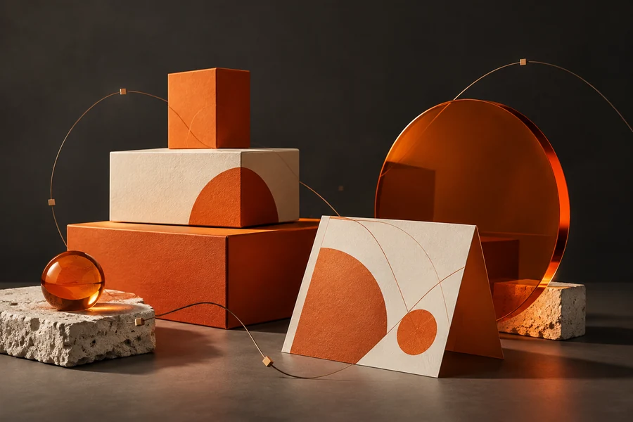
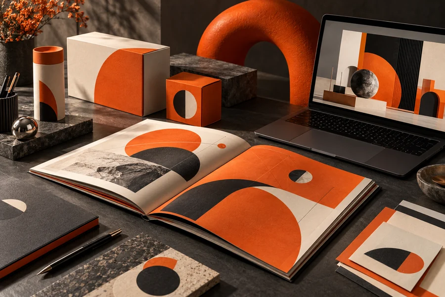
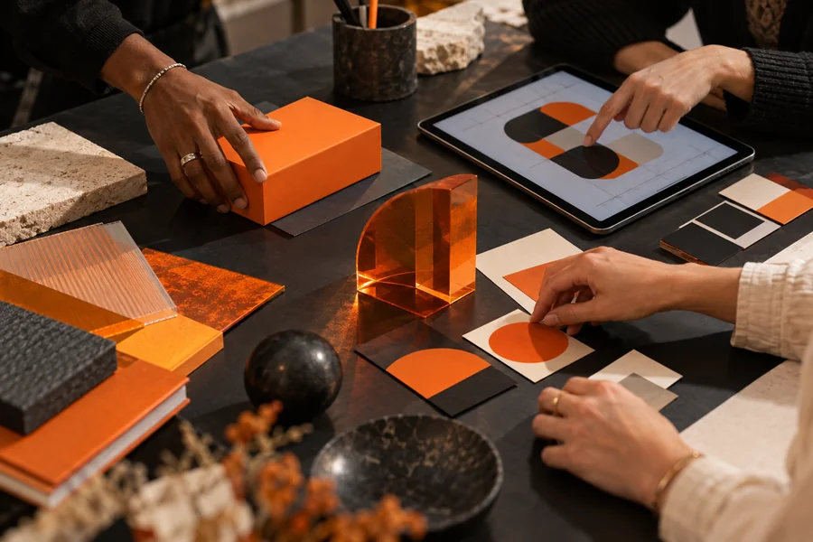

Подросткам
- Хотите развивать креативность и попробовать себя в дизайне
- Мечтаете зарабатывать свои первые деньги через фриланс и реальные проекты
- Готовитесь к поступлению в творческий вуз или хотите создать собственное портфолио
Научитесь работать с AI-инструментами на реальных бизнес-кейсах.
Свяжитесь с нашими менеджерами по телефону, указанному на сайте. Они помогут подобрать подходящие компьютерные курсы.

Графический дизайн — одна из самых востребованных креативных профессий в диджитал-сфере. Она позволяет реализовывать идеи визуально, работать с брендами, продуктами и создавать дизайн, который видят тысячи людей.

Дизайн нужен везде: в маркетинге, SMM, веб-разработки, презентации, брендинг, образование, e-commerce, издательствах и даже в создании визуалов для видео и AI.
Дизайнеры могут работать удаленно, на фрилансе, проектно или полноценно в компаниях. Это профессия, которую можно сочетать со свободным графиком или семейной жизнью.
Чтобы стать дизайнером, не нужно иметь диплом или рисовать от руки. Достаточно практики, мышления, ощущения стиля и понимания инструментов – этому вы научитесь на курсе.

Рынок дизайна быстро обновляется. Учащиеся новому (AI, цифровая иллюстрация, UX/UI) всегда пользуются спросом. Креативные специалисты по портфолио могут зарабатывать еще во время учебы.
Откроете для себя новую профессию и начните с позиции Junior-специалиста
от $600+
У вас больше одного года опыта и есть несколько кейсов в портфолио
от $1 300+
У вас более 4 лет опыта, прокачанные навыки и большие кейсы в портфолио
от $2 500+
 Работа 1 · открыть оригинал
Работа 1 · открыть оригинал Работа 2 · открыть оригинал
Работа 2 · открыть оригинал Работа 3 · открыть оригинал
Работа 3 · открыть оригинал Работа 4 · открыть оригинал
Работа 4 · открыть оригинал Работа 5 · открыть оригинал
Работа 5 · открыть оригинал Работа 6 · открыть оригинал
Работа 6 · открыть оригинал Работа 7 · открыть оригинал
Работа 7 · открыть оригинал Работа 8 · открыть оригинал
Работа 8 · открыть оригинал
Программа учитывает актуальные требования рынка и фокусируется на практических навыкам, которые смогут сразу применять.
Подтверждение прохождения курса по графическому дизайну – для LinkedIn, резюме или портфолио.
 Открыть сертификат на сайте IT STEP
Открыть сертификат на сайте IT STEPГотовые работы для фриланса, стажировки, резюме или размещения на Behance.
Вы сможете проходить тестовые задания, брать фриланс-проекты или работать дизайнером в маркетинговой/диджитал-команде.

Спрос на дизайнеров стабильно высок в маркетинге, соцсетях, интернете, образовательных и креативных проектах.
Вы не просто изучите Photoshop и Illustrator, но и научитесь использовать Midjourney, Firefly и другие современные сервисы.

Вы сможете создать портфолио, начать брать заказ или пройти тестовое агентство без задержек.
Используйте возможность учиться с ментором в комфортном онлайн-формате по актуальной цене.

Ранняя запись гарантирует место и доступ к вводному модулю.
Оплатить можно через сайт с помощью банковской карты или оставить заявку на обучение – менеджер пришлет вам счет.
Да, график занятий можно изменить.
Свяжитесь с нашими менеджерами по телефону, указанному на сайте. Они помогут подобрать подходящие компьютерные курсы.
Свяжитесь с нашими менеджерами по телефону, указанному на сайте. Они помогут подобрать подходящие компьютерные курсы.
Приемная комиссия
welcome@itstep.orgПн-Сб 9:30-19:00
Приемная комиссия
welcome@itstep.orgПн-Сб 9:30-19:00